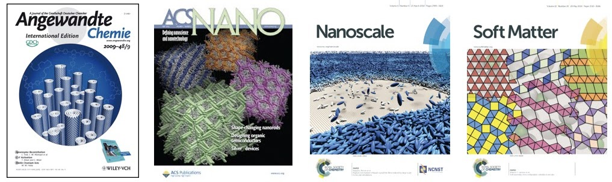

VISION
Future materials and devices will adapt themselves in response to the environment to perform their functions without compromising their efficiency. Furthermore, they will self-repair and self-improve by "learning" from defects and failures during their service lifetime. Even better, they can augment living cells, and replace damaged ones whenever necessary. In other words, we are trying to make materials and devices that mimick living matter. Imagine such materals can be used for applications ranging from smart medical devices, cellular therapies for treating human neurodegenerative disorders, to safer batteries with high energy density. It is evident that many fascinating opportunites for engineering such materials and devices can be found at the atomic and molecular levels; and with them fundamental challenges are plenty.
Towards this vision, I have shown in my work many fascinating possibilities:
- Making random copolymers that mimic intrinsically disordered proteins for protecting multiple proteins in non-native media (Nguyen et al. Proc. Natl. Acad. Sci USA 2018)
- Engineering similarly charged nanoparticles and proteins that form assemblies mimicking viral capsids (Park et al.'s Nature Communications, 5, 3593, 2014 and Xia et al., Nature Nanotechnology 6, 580-587, 2011)
- Predicting particles whose shape can morph and evolve, which are used for programmable materials Nguyen et al. ACS Nano, 5, 8892-8896, 2011: O. Gang and Y. Zhang, Shaping Phases by Phasing Shapes, ACS Nano, 5, 8459-8465, 2011.
Essentially, my studies address the following fundamental questions:
1. Which nanostructures could be good candidates for new materials?
Identifying functional nanostructures is certainly challenging. Throughout human history, we have witnessed how Nature has evolved to select structures that are more energy effient, that are moving faster, and that are adaptive to environmental changes. My research is devoted to building upon such ideas for designing nanomaterials that mimic biological stuctures, first in terms of structural features, then in terms of their ability to reconfigure in response to changes in the environment.Percolated networks formed by random ionomers
- B. Ma, T. D. Nguyen, V. Pryamitsyn, M. Olvera de la Cruz, "Ionic correlations in random Ionomers", ACS Nano, 12, 2311, 2018.
Uniform-sized clusters by like-charged nanoparticles and proteins
- T. D. Nguyen, B. A. Schultz, N. A. Kotov, S. C. Glotzer, Generic, phenomenological, on-the-fly renormalized repulsion model for self-limited organization of terminal supraparticle assemblies, Proceedings of the National Academy of Sciences USA, 112(25), E3161–E3168, 2015.
- Y. Xia, T. D. Nguyen, M. Yang, B. Lee, A. Santos, P. Podsiadlo, Z. Tang, S. C. Glotzer, N. A. Kotov, Self-assembly of self-limiting monodisperse supraparticles from polydisperse nanoparticles, Nature Nanotechnology, 6 (9), 580-587, 2011.
Helical structures that adopt different morphologies in different solvents and temperatures
- T. D. Nguyen, S. C. Glotzer, Switchable helical structures formed by hierarchical assembly of laterally tethered nanorods, Small, 5, 2092-2098, 2009
2. How can we engineer and control nanoscale interactions for targeted nanostructures?
At nanometer scale, it is well known that these building blocks interact via the van der Waals dispersion and electrostatic forces, and/or effective hydrophobic/hydrophilic interactions. While these interactions are non specific in nature, it is hard to predict how they are realized in specific systems and how they will dictate the collective behavior of the building blocks. For multicomponent systems, it becomes even more challenging because of the non-uniformity in the chemical and physical properties across different length scales. To address these challenges, we have employed and developed all-atom, united atom and coarse-grained models and performed computer simulations to reveal a lot of fascinating insights into phenomena obserbed in experiment and predict the structural and dynamic behaviors of the resulting assemblies from these nano building blocks. The ultimate goal here is to find design rules for the interactions between the building blocks for specific structures.Controlling the interactions between proteins and polymers for protein stabilization
- T. D. Nguyen, B. Qiao, M. Olvera de la Cruz, Efficient encapsulation of proteins with random copolymers, Proceedings of the National Academy of Sciences, USA, 115:6578-6583, 2018.
Controlling the interactions between colloids and nanoparticles for biosensing
- C. He, T. D. Nguyen, K. Edme, M. Olvera de la Cruz, E. A. Weiss, Non-covalent control of the electrostatic potential of quantum dots through the formation of interfacial ion pairs, Journal of American Chemical Society, 139 (29), 10126–10132, 2017. DOI: 10.1021/jacs.7b05501
Controlling the nanoscale interactions at solid-liquid interfaces for 3D printing and coating
- T. D. Nguyen, J.-M. Y. Carrillo, M. A. Matheson, W. M. Brown, Rupture mechanism of liquid crystal thin films realized by large-scale molecular simulation, Nanoscale, 2014, 6 (6), 3083-3096. (Issue cover)
3. How to make the assembled nanostructures behave like biological matter?
This is the key challenge towards engineering biomimetic materials, those that can respond to changes in the environment such as pH, temperature, ionic strength or light in prescribed manners (look at the skin color of betta fish for instance). Traditionally, approaches to engineering materials from bottom up involve designing static nanoassemblies in the sense that the assembled structures are, and should be, thermodynamically stable states. Here we relax that requirements by investigating strategies for making nano-assemblies that transform spontaneously between different morphologies in response to environment cues. We show that changing dielectric constrast, making protein-mimicking polymers, varying the effective interactions between parts of the building blocks or morphing their shapes open a host of new possiblities for reconfigurable nanostructures, which in many ways resemble biological matter. Indeed, the ability to reconfigure or adapt the environmental changes is one of the prerequisites for the materials and devices to self-repair and self-improve.- T. D. Nguyen, B. Qiao, M. Olvera de la Cruz, Efficient encapsulation of proteins with random copolymers, Proceedings of the National Academy of Sciences, USA, 115:6578-6583, 2018.
- T. D. Nguyen, E. Jankowski, S. C. Glotzer, Self-assembly and reconfigurability of shape-shifting particles, ACS Nano, 5 (11), 8892–8903, 2011.
- T. D. Nguyen, S. C. Glotzer, Reconfigurable assemblies of shape changing nanorods, ACS Nano, 4 (5), 2584-2594, 2010 (Issue cover).
4. Methods and Implementations for Open-Source High-Performance Computing
My research is a marriage between multiscale modeling and developing computational methods that take advantage of high-performance computing, advanced sampling and machine learning techniques. In the data science era, while most research in the field are concerned with how to apply machine learning techniques to the design problems in specific domains (like for polymers, colloids, drug molecules), the fundamental problem lie in how to generate high-quality datasets. For molecular and nanoscopic systems, the challenge to obtain high-quality datasets originate from the probabilistic nature of the output given a set of input parameters. Although techniques to improve the statistical quality of the output have been proposed for years, incorporating them into machine-learning workflows is computationally expensive, so most proof-of-concept studies to date either rely on exisiting datasets (if any), or resort to "lazy" computations (meaning poor statistics). To address such computational challenges with machine learning enabled design, I have 1) leveraged the power of hybrid CPU/GPU architectures to accelerate the speed of Molecular Dynamics simulations, 2) implemented and developed various algorithms to improve sampling of microscopic systems, and 3) coupled particle-based with continuum calculations to bridge different time scales, and 3) employed pattern recognition and combined different supervised classifiers for structural identification problems in molecular systems. Below are some selected studies:- G. Vernizzi, T. D. Nguyen, Orland, M. Olvera de la Cruz, "Multicanonical Monte Carlo ensemble growth algorithm", Physical Review E 2020, 101, 021301(R). (flat-histogram sampling of density of states using population growth)
- T. D. Nguyen, H. Li, D. Bagchi, F. J. Solis, M. Olvera de la Cruz, Incorporating surface polarization effects into large-scale coarse-grained Molecular Dynamics simulation, Computer Physics Communications, 241, 80-91, 2019, DOI:: https://doi.org/10.1016/j.cpc.2019.03.006 (pdf) (coupling particle-based and continuum calculations for electrostatic interactions across interfaces)
- T. D. Nguyen, S. J. Plimpton, Aspherical particle models for molecular dynamics simulation, Computer Physics Communications, 2019 (pdf) (developing DEM models for 2D and 3D shapes for large-scale simulations)
- T. D. Nguyen, GPU-accelerated Tersoff potentials for massively parallel Molecular Dynamics simulations, Computer Physics Communications, 212, 113-122, 2017. (pdf). (implementing GPU-accelerated version of 3-body interatomic potentials)
- T. D. Nguyen, S. J. Plimpton, Accelerating dissipative particle dynamics simulations for soft matter systems, Computational Materials Science, 100, 173-180, 2015. (pdf) (implementing GPU-accelerated version of DPD for LAMMPS)
- T. D. Nguyen, C. L. Phillips, J. A. Anderson, S. C. Glotzer, Rigid body constraints realized in massively parallel molecular dynamics simulations on graphics processing units Computer Physics Communications, 182 (11), 2307-2313, 2011. (Implementing GPU-accelerated version of rigid body integrators for HOOMD-Blue, one of the first packages that support this type of functionalities)